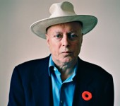

“El absolutismo es lo que la libertad de expresión hace imposible”
—Christopher Hitchens
El Papa Francisco decía el otro día, –parafraseando, ¿no?– que si alguien le ‘mentaba la madre’ le azotaba un puñetazo. Le salió lo “latino” a Papa Pancho, o como también dirían en mi país, lo “macho”, nada de poner la otra mejilla, no, eso es de “pendejos”, usted me insulta y lo hago pagar por ello, enseguida y físicamente. Las palabras del líder católico son residuos de miles de millones de opiniones respecto al atentado contra la libertad de expresión cometido en Francia a los caricaturistas de Charlie Hebdo, una publicación tan radical que para muchos significa un insulto automático y ofensivo a sus cosas sagradas. El debate se pone peliagudo porque estos caricaturistas aprovechaban completamente su derecho a la libre expresión, tanto así, que hasta algunos que creen nunca ofenderse se han molestado con sus publicaciones.
Quisiera recordarles que el que no se sienta ofendido o molesto por algo en este planeta, no es humano. Es por eso que existe la lucha por libertades y derechos, porque todos queremos disfrutar de ellos aunque nos duelan las burlas, tantas veces reales, que nos pueden hacer víctimas, irónicamente, de lo mismo por lo que luchamos. Yo, por ejemplo, soy atea pero no me relaciono con todo lo que dicen los ateos, soy feminista, pero no me relaciono con todo lo que dicen las feministas, soy humana, pero no me relaciono con todo lo que dicen los humanos, y si aún existieran neandertales tuviera que hablar de mi condición de homínina. Es imposible que estemos todos de acuerdo aunque nos definamos con las mismas etiquetas. Por eso en ciencia se inventó el método científico, una forma de enganchar la realidad, podándola de todas esas características humanas que suelen estar lejos de los hechos. No obstante, cuando una sociedad, una cultura y un gobierno comienzan a formarse, el asunto se vuelve más complejo ya que no son las evidencias científicas las que suelen abrir el camino. He dicho muchas veces que somos una especie infantil y primitiva, esos gritos similares a los papales lo confirman: no sabemos comportarnos con madurez y gritamos porque la niñita de al lado nos sacó la lengua.
Le agregas a eso la idea de la libertad y nos ponemos cuánticos. Es que la libertad es una construcción propia del ser humano infantil que todavía no sabe subir bien esa escalera infinita donde cada peldaño significa un objetivo que aún no es comprendido o aceptado por todos. Muchas veces obtenemos independencias de lazos externos y en otras ocasiones conseguimos liberarnos de alguna cadena interna que nos mantenía estancados. Y es que si te pones a pensar en ello, una cascada de reflexiones diferentes se mueve entre tus neuronas: desde el famoso regalo divino del libre albedrío, hasta la idea de disfrutar de derechos – una guerra joven que aún le falta mucho tiempo para terminar – y tantas otras libertades que yacen sembradas entre tus sinapsis buscando la forma de negociar la mejor manera de supervivencia entre los pasadizos, las puertas y las cadenas que ofrece la vida.
Nelson Mandela, Jim Morrison, Rosa Parks, Salman Rushdie, Virginia Woolf, George Orwell, Bob Marley, Eleanor Roosevelt, Albert Camus, Simone de Beauvoir, Karl Marx, en fin, tenemos billones de opiniones sobre la libertad, citas hermosas que conmueven y nos invitan a pensar en melodías de violines sazonando nuestras realidades, sin embargo, del dicho al hecho hay mucho, pero mucho trecho y todavía una gran cantidad de humanos no pueden lidiar, ni siquiera, con la libertad de expresión.
Así que pedí ayuda en las redes sociales, me estoy acostumbrando a ello por algo bastante básico, disfruto enormemente de los comentarios, además, es una costumbre que tenemos produciendo la revista Órbitas Científicas y que he adoptado también aquí en la Lupa porque quizá me parece efectiva. Luego de leerlos todos elegí algunos al azar y otros porque ofrecían una definición con características singulares, en esta ocasión no me detuve a buscar los países de procedencia de las personas o sus ocupaciones, sólo las palabras (algunas veces editadas pues recorté algunos comentarios para que se distinguieran ideas centrales):
Libertad es el espacio multiplicado por el tiempo.
—Mauricio Gómez Calderón
¿Libertad? Es poder ser tú mismo. Poder pensar, investigar y opinar como quieras y sobre lo que desees. Es poder ir a donde tus posibilidades te lo permitan. Es poder amar a quien quieras. Es poder decidir tú mismo, con la información correcta, lo que te convenga.
Libertad es poder, en el más puro de los sentidos.
—Eduardo Iván León Duarte
Un sueño utópico que perseguimos, una hermosa palabra que describe una situación inalcanzable, porque nos manipulan con su definición hasta hacernos creer que votar es ser libre, o elegir la compañía telefónica, o “decidir” entre las alternativas que nos proponen… Seguramente la verdadera libertad no existe, pero lo más parecido a ella creo que pasa por el respeto a las ideas y a las decisiones, siempre y cuando esas ideas, opiniones y actos no interfieran en la libertad de pensar y actuar del resto, para que la libertad sea real y no solo de la gente poderosa.
—Begoña Carro
La libertad es ese momento del día en el que haces lo que quieras sin que nadie te diga nada.
—Mau Ep
Ese espacio en que el ser humano alcanza su máximo potencial posible… si quiere.
—Judith del Rocio
La libertad es un ideal; como la igualdad o la perfección…
—Pablo Fernando
Libertad es aprender a pensar por sí mismo, por eso es necesario educarse para aprender a razonar y adquirir conciencia.
—Telsa Delf
Libertad para mi es siempre poder elegir…
—Guillermo Vergara
El concepto de libertad es una falacia.
—Margharitta Suarez
La ilusión de creer que en nuestras acciones y decisiones no nos influye (en gran porcentaje) nuestra herencia genética en tanto mamíferos primates, como también la predisposición mental de creer que tampoco nos influye en gran medida nuestra herencia cultural y ubicación socio económica.
—Carlos Troncoso
¿La libertad será una utopía? Pues el miedo nos hace ser esclavos, y a su vez humanos.
—Maria Victoria Espaillat
…(Hay que) diferenciar la sensación subjetiva de libertad (coincidente o no con la realidad, según cada caso), de la libertad como estado objetivo y, en consecuencia, de los propios conceptos o categorías filosófica y socio-psicológica “libertad”. Es un hecho que la libertad no es ni podría ser un cierto estado absoluto (si ahora mismo quiero volar por el aire sin otro medio más que mi voluntad “libre”, bueno… Otra cosa es si puedo obtener un pasaje aéreo). La libertad siempre será libertad condicional, es decir condicionada por un conjunto de factores… Resumiendo: La libertad tiene sus límites, aunque éstos no son absolutos en todos los casos.
—Rumau Fuav
La libertad es una quimera, algo inalcanzable. Aunque para fines prácticos podría decir que dentro de lo que cabe es la capacidad que tenemos para tomar las decisiones más convenientes para nosotros mismos (asumiendo las consecuencias, obviamente).
—Vienetta Rojo
Y sí, la libertad conlleva responsabilidad para contigo y para los demás.
—Chapu Valdegrama
Es el derecho que tengo a, dentro de unas normas establecidas, hacer todo lo que quiera.
—Amandysha
Una ilusión que representa poder hacer sin condicionamientos ni limitaciones, todo lo que uno desee, lo cual es solo posible dentro de nuestra imaginación.
—Guillermo Carvalho
¡Es pecar sin remordimiento!
—Rocío Robles
La libertad es tener la oportunidad de escoger tus cadenas.
—Ignacio Antonio Ordinola
Mi felicidad se basa en mi tranquilidad, siendo feliz, me siento libre. ¿Qué se necesita para tener tranquilidad? Pues tener satisfechas las necesidades básicas, los satisfactores son asunto personal.
—Marta Rodriguez
La libertad comienza con la satisfacción de todas tus necesidades.
—Jorge René González Guerrero
La libertad es flexibilidad, por ejemplo, jamás en mi vida he sido religioso, ni de niño ni de adulto, pero puedo entrar a una iglesia y rezar por algún compromiso social. Si no lo pudiera hacer significaría que soy prisionero de mi ateísmo pues no tendría la flexibilidad necesaria para comportarme como creyente.
—Armando Vallejo Garamendi
En el ser humano siempre habrá un obstáculo para alcanzar una libertad plena, es como la felicidad, solo tenemos momentos creados a beneficio de cada persona (lo que te hace libre a ti quizá no me liberta a mí).
—Elsa Bencosme
La libertad no es correr por una llanura o pradera levantando los brazos y mirando al cielo. Libertad es poder pensar lo que quieras. La esclavitud está en la mente.
—Félix Polanco
La libertad tiene un solo límite, respetar la libertad de los otros, o sea, no ejercer coacción física sobre otros.
—Herminio L. Iglesias
Poder decir lo que se me canta a quien se me canta.
—Natacha Bertin
A esta altura de la civilización, vivir como el náufrago de Tom Hanks…
—Magdalena Dannhäuser
El primer peldaño
Scott Hughes escribió que la palabra libertad no va a tener significado alguno si no estamos de acuerdo en alguna definición; no obstante, en lo que sí parece que estamos de acuerdo es que existen muchos tipos de libertades, de hecho, muchas veces una cosa es sólo considerada un derecho hasta que te la quitan o te prohíben usarlo o hablar de ello. La mujer no evolucionó con un velo, fue hasta cuando la obligaron a ponérselo que no hacerlo se convirtió en una acción de libertad; un derecho de la mujer. ¿Y qué ocurre si ya quieres usar el velo?

Por eso es aquí importante marcar la diferencia entre libertad e independencia. El diccionario de Oxford nos dice que cuando hablamos de libertad nos referimos al poder o derecho de actuar, hablar o pensar como uno quiera, sin obstáculos ni restricciones, y cuando nos referimos a independencia nos referimos a ser libres del control externo; no vivir en función de la autoridad de otros. No depender de otro para nuestra subsistencia o supervivencia. Una vez te vas independizando de cadenas, también necesitarás ser libre tú mismo, atreverte a dudar, a cuestionar la autoridad; de hecho, la mayoría de las veces la libertad nace en el interior y te empuja a independizarte de cadenas exteriores. Puedes ser una persona que se ha liberado de la creencia en dioses a pesar de que no lo puede decir dentro de su grupo, las razones varían ampliamente, de hecho, en algunos lugares tu vida puede depender de ello. Aún así, ese cerebro es libre para pensar sobre otros conceptos y no los que han sido impuestos por su sociedad desde el momento de su nacimiento.
Ser independiente no te libera de muchas cosas como la preocupación y de la ansiedad tanto patológica como producida por otros medios de los que no te has podido zafar, por más que lo has intentado. A lo mejor la libertad absoluta es realmente una ilusión, una quimera con la cual soñamos para, mientras tanto, adquirir independencias y libertades relativas con respecto a la posición de nuestras vidas. La especie camina prohibiendo y legislando por un lado y armando revoluciones en contra de esas prohibiciones por otro. Si no te dejan hacer algo que piensas puedes hacer, enseguida deseas pelear para que te dejen hacerlo. Y es aquí donde una parte importante de la libertad entra en el juego: los demás. Sólo asegurando que el grupo esté seguro y tranquilo puedes conseguir tu propia seguridad y tranquilidad. Mientras más pequeño es el grupo, más probabilidades tendrá de sobrevivir bajo sus propias normas. Ese no es el caso mayoritario ahora mismo en el planeta.
Para el fallecido autor y periodista Christopher Hitchens, la libertad de expresión es el primer peldaño para alcanzar muchas otras libertades. Hitchens era considerado como un “absolutista del derecho a la libertad de expresión”, una ironía que a él le recordaba “ese principio inquebrantable por el que vale la pena luchar y que, oblicuamente, también nos recuerda que el absolutismo es lo que la libertad de expresión hace imposible”. Lo cual es verdaderamente listo y hermoso. Hitchens escribió largo y tendido al respecto, aquí algunas de sus palabras:
“Desde antes del comienzo de la historia humana, los déspotas se han basado en la idea de que, literalmente, su palabra es ley o es absoluta. Emperadores prerromanos y romanos trataron de encubrir esto en la idea de que ellos mismos eran suprahumanos…
En mi carrera, he visitado decenas de países que atraviesan crisis de guerra o la angustia y la lucha sectaria. Puedo decir con certeza que dondequiera que se extingue la luz del debate y la libre expresión, la oscuridad es mucho más profunda, más palpable y más prolongada. Pero la necesidad de impedir la entrada de noticias u opiniones indeseables siempre será una muy fuerte, por lo que la batalla para reafirmar la libertad de expresión debe ser reiterada en cada generación.
Es tu cerebro, no el mío
Ahora bien, como muy bien sugerían en la red, estamos limitados por lo que somos biológicamente, es decir, no podemos ir en contra de leyes como la gravedad o de la fisiología que nos impide volar. Sin embargo, que las áreas en el subconsciente de tu cerebro tomen decisiones segundos antes de que lo hagas conscientemente no te hace esclavo de nada más que de ti mismo y tus circunstancias; de hecho, cada organismo sobre el planeta lo es. Tu consciente y tu subconsciente son dos caras de la misma moneda llamada conciencia, tu conciencia; así, eres responsable de tus decisiones aunque no recuerdes haberlas tomado segundos antes de actuar. La colectividad de tu especie influye en tu individualismo, sin embargo, el cerebro humano es capaz de cambiar; poseemos una corteza capaz de razonar y analizar, de dudar e investigar, de inventar para observar mejor el lugar donde vive y sus características, de entrenarse y controlar, de aprender.
Por lo tanto, la decisión que tomaste sin saberlo la has tomado tú, no yo, ha sido tu cerebro moldeado por la epigenética de tu vida, no la mía. Probablemente tu hermano hubiera tomado otra, también sin pensarlo, igual era su cerebro, su decisión y cada cual es responsable de su cabeza. Homo sapiens se inició en la investigación científica porque el conocimiento también regala libertad. A veces, las jaulas están abiertas, pero todavía no sabemos en cuál nos hemos o nos han metido y nos pasamos la vida descubriendo cadenas y puertas que considerábamos abiertas y resulta que estaban cerradas.
Sólo el Papa sabe lo que piensa el Papa, pero lo que dice es público y está dirigido específicamente a millones de católicos por el mundo, menos mal que la mayoría no hace caso. Yo me crié en un mundo católico y lo que dijera el Papa y el Vaticano no parecía importar en mi familia, eran noticias lejanas, como los príncipes de Mónaco y Lady Diana; es lo maravilloso de la libertad, te ofrece hasta sentirte libre de tu propia religión.
Es difícil para mí justificar la violencia, sin embargo, en un mundo de abusadores y abusados no debería ser fácil hacerlo. Ahora bien, los chistes y las burlas no tienen que llevarnos a la dura agresividad, de hecho, nos ayudaría mejor intentar madurar ya que los primeros o te causan risa o no y las segundas o te ríes o las ignoras; puedes hasta llevarlo a un debate y lanzar improperios tipo ad hominems, si quieres, es lo que nos permite crecer; pero asesinar al otro o pegarle una trompada por una broma me parece exagerado, de inseguros. Hay cosas en el planeta por las que vale la pena luchar y hasta matar por ello; desafortunadamente, son por las que menos se lucha. En fin, que la libertad se fractura, en ocasiones parece ser efímera y quimérica aunque y, verdaderamente, no suele sentirse absoluta; así como tan jocosamente lo expresó Leafar Ortsac en Facebook: “Libertad es poder darle vuelta a la almohada y seguir durmiendo…”
Volver al índice de artículos
Comentarios
Comments powered by Disqus